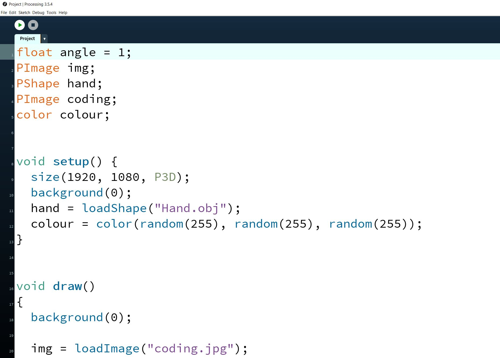
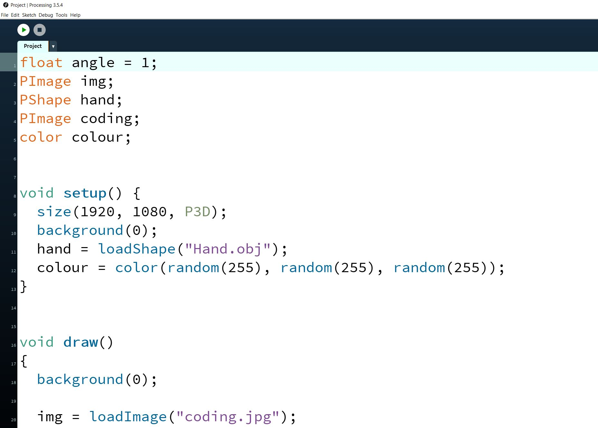

Adel Zaky
Hi, my name is Adel and I am a student at City, University of London! I am currently studying Computer Science have been programming since I started my GCSEs and have learnt many languages along the way such as Python, SQL and a Markup Language in HTML to help me build a website. Some of my interests include Gaming, Computing, Football and The Gym. If you would like a more detailed look at all of my skills and experience, I have acquired over the year, you can take a look at my CV Here.
Bootcamp 2020: 3D Project
This was my first programming project at City (2020). This Processing project demonstrates a comprehensive understanding of the use of 3D objects, loops, randomness, variables and a bit of interaction. I firstly created a cuboid in the top left of the sketch which I had to translate to ensure that it would be in the desired position of the sketch. Furthermore, I made it so that every time I ran the sketch, the colour of the cuboid would change. After that, I did the same thing for two objects which were a sphere and a pyramid. These were a bit more challenging as I had to constantly randomise the colours for the sphere to make it look like a disco ball, and for the pyramid, I had to map out all the vertices and map each colour to those vertices. Lastly, I challenged myself a bit and decided to import a 3D object. I managed to do this fairly easily but had a few hiccups along the way as I had to figure out how to add colour to it and

 
